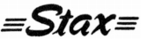

STAX（スタックス）
コンデンサー型ヘッドフォンで有名なブランド。1938年に「昭和光音工業」として林尚武氏が創業、1950年には「スタックス」ブランドのマイクロフォンを商品化、1963年に「スタックス工業�梶vへ社名変更した。コンデンサー型のトランスデューサー（変換器）を得意とし、ヘッドフォンの他にカートリッジ、ラウドスピーカーもコンデンサー型で発売していた。またカートリッジと組み合わせるアームや、ラウドスピーカードライブ用のパワーアンプ、さらにＣＤプレイヤーやDAコンバータ等も販売していた。しかしその経営は安定したものではなく、1980年代前半には本社を豊島区雑司ヶ谷から埼玉県入間郡三芳町に移しており、ついに1995年12月13日に休業を宣言し、破綻した。1996年（1月22日登記）にコンデンサー型ヘッドフォンに事業範囲をしぼり、現行の�泣Xタックスとなった。(*2)
このサイトで扱うアナログ関連製品については1980年代初頭のアームの改良で、製品開発は終了していた。1980年代末にカートリッジが姿を消し、旧会社終焉直前ではアームなどが受注生産品としてかろうじて残っている状態であった。現行の�泣Xタックスではアナログ関連製品の販売は無いが、旧会社のUAシリーズのトーンアームについては限定的な修理の相談に応じているようだ。(*1)
＊1 2011年1月1日付けで、部品払拭で、原則的に修理不能となったようだ。
＊2 2011年12月9日、中国の音響機器メーカーにより、�泣Xタックスの買収が発表された。�泣Xタックスは旧製品についても、手厚いサポートを行っていたメーカーであったが、今後、このブランドがどのようになっていくかは、現時点では不明である。
�T.カートリッジ
プロ用マイクと共に、同社が「スタックス」の商標を使い始めたころからの製品。当然、一般的な電磁型ではなく、磁性体を使わないコンデンサー型である。初期の製品は専用アームが必要であったが、1960年代に入ると、同社製品に限れば、アームパイプ交換で使用できるようになり、最後のCP-Yシリーズでは、一般のアームでも使えるようになった。
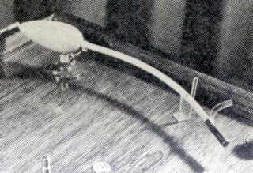
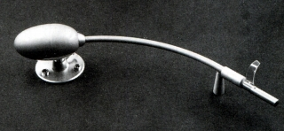
（初期の製品 左が1952年のCP-10、右はCP-20)
注意 このブランドのカートリッジは特殊なもので、周辺機器がそろわないと原則的に使用不可能です。どのカートリッジも専用の検波器またはイコライザーユニットが最低限必要ですし、またCP-Yタイプ以外のモデルでは、事実上、専用のアームシステムも不可欠です。高度の電気的知識及び工作技術を有する方ならともかく、そうでない方はオークションで見かけても、手を出さないことをお勧めします。
1.〜1960年代の製品
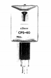
(CP-40)2.CP-X
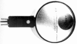
(CP-X)3.CP-Y
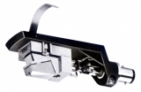
(CP-Y)
�U.アーム
スタックスのアームは、同社のコンデンサー型カートリッジと密接な関係がある。初期から1960年代半ばまでのアームは事実上、コンデンサー型カートリッジの専用アームであった。「UA」シリーズの登場でパイプ交換によりコンデンサー型と通常のカートリッジ両方に対応可能となった。
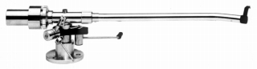
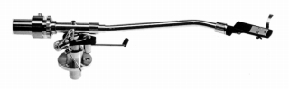
(左がUA-7にコンデンサーカートリッジ用パイプを装着したもの。右が通常用のパイプを装着したもの。同社のコンデンサー型カートリッジは構造の違いからか、後期のエレクトレットタイプを除き、シェル一体型カートリッジのような有様で、専用パイプはシェルを持たず、指掛けのみがついている。）
1.専用アーム時代の製品
自社のコンデンサー型カートリッジ専用のアーム。管理人が資料を持っているのはSA-228のみである。1950年代には「LA」の型番であったようだ。
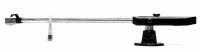
(SA-228)
2.UA-3
パイプ交換式を採用し、通常の電磁型カートリッジへの対応を可能とした最初の製品。型番は「UA」となった。メーカー側も通常カートリッジでの使用を意識していたらしく、それらしい広告もみられる。
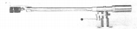
(UA-3)3.UA-3N
高性能だが使いにくい部分があったUA-3の改良型。カートリッジ等の重量変化に対し、頻繁にウエイトの交換が必要だった点が改められ、大半のカートリッジは標準のウェイト1つで対応できるようになった（オルトフォンなど重量級カートリッジは別売りサブ・ウェイトで対応）。また軸受けやシェルなども改良されている。また当初からロングアーム版、及びコンデンサー型用セットが用意されていた。
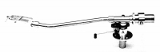
(UA-3N)4.UA-7、70
スタックスのアームでは、おそらく一番売れたモデル。現在もしばしばオークションに登場する。ヤマハのYP-1000に採用されたのもこのモデル。この世代から標準的な長さのもの（UA-7)と、ロングアーム(UA-70)では型番が分かれるようになった。技術的にはインサイドフォースキャンセラーが採用され、シェル等も改良されている。
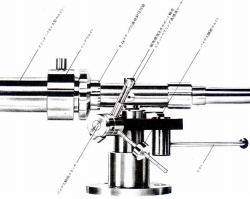
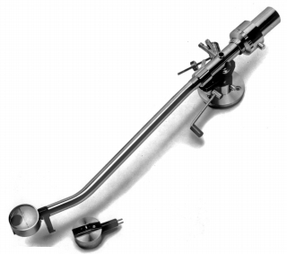
(「Cond' Ass'y」と呼んだコンデンサー型用パイプを用意したのはノーマルのUA-7と70まで。）(1)ノーマルモデル
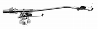
(UA-7)(2)UA-7/cf
1976年頃、カーボンパイプのモデル、UA-7/cfが追加された。この時期にはカートリッジがCP-XからCP-Yにモデルチェンジした為、コンデンサー型用パイプはないようだ。
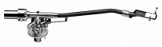
(UA-7/cf)(3)UA-7N/70N/7cfN
UA-9がインテグレートタイプとしての使用がメインだった為、UA-7の系列は併売が続いた。そしてUA-9系と共に改良を受けたのがUA-7N、UA-70N、UA-7/cfNである。改良点は、アームレストがスタンドと一体化されたことと、アームベースが重量級の貫通型となったことなど。
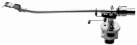
(UA-70N)5.UA-9、90
UA-7/cfの成果をふまえ、シェル一体型のストレート・カーボンパイプを標準装備とした機種。ただしパイプの規格はUA-7系列と共通のため、一般的なJ型のユニバーサルアームとしても使用できる。技術的には水平方向に張り出したアンチ・ロール・スタビライザーが特長。
(1)ノーマルモデル
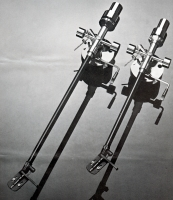
(UA-9/90)(2)UA-9N/90N
改良点は、アームレストがスタンドと一体化したことなど。
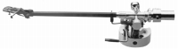
(UA-9N)注 UA-7/9系オプションは1987年の本体値上げ時に合わせて価格改定されています。
�V.検波器・イコライザーユニット
1.発振検波器
コンデンサー型カートリッジの拾った信号をオーディオ用信号に変換する機械。イコライザー内蔵で、出力はラインレベルである。
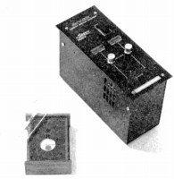
(POD-XE)2.ヘッドアンプ
エレクトレット・コンデンサー型カートリッジ用のヘッドアンプ。イコライザー内蔵で、出力はラインレベルである。PS-3は同社のプリアンプ用のオプションイコライザーボードを単独で使用する為の電源部。
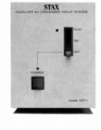
(ECP-1)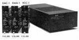
(PS-3)
�W.その他
ヘッドシェル3点とカートリッジスタビライザー2点。
STAX資料室へ
サイトマップへ